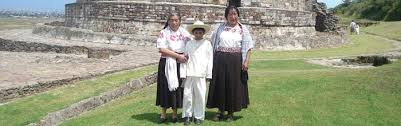

En la actualidad la vestimenta tradicional está prácticamente en desuso;
sólo se usa en las fiestas de la comunidad y en ocasiones especiales.
La ropa comercial o industrial ha remplazado paulatinamente la indumentaria
indígena.
La vestimenta tradicional que se puede observar sobre todo en personas de edad mayor,
se constituye por faja, chincuete, blusa y rebozo, en el caso de las mujeres y en
los hombres calzón y camisa de manta; huaraches. La cintura era ceñida por una
faja; estas prendas eran elaboradas por las mismas personas con el apoyo de telares
de cintura y decoradas según su cosmovisión mediante bordados.
